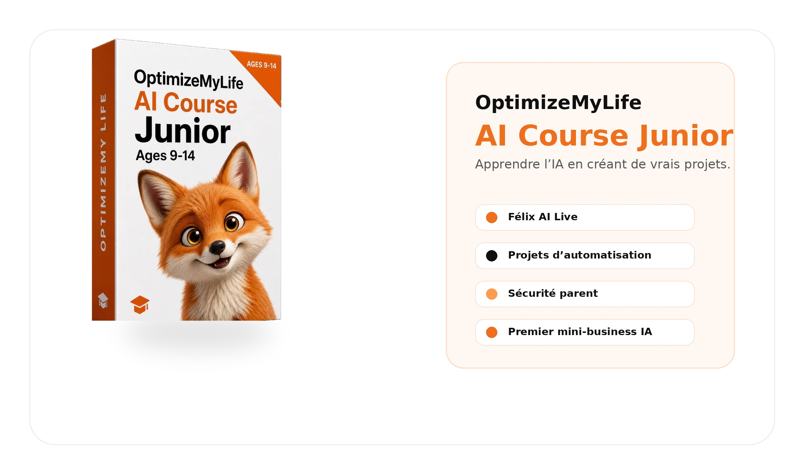
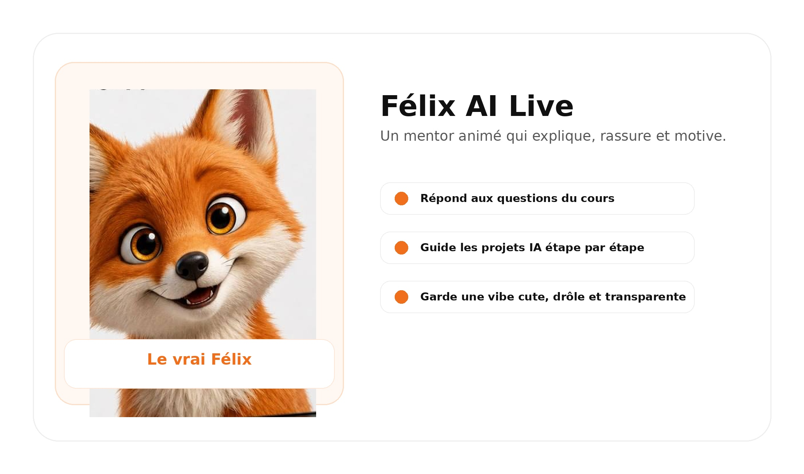
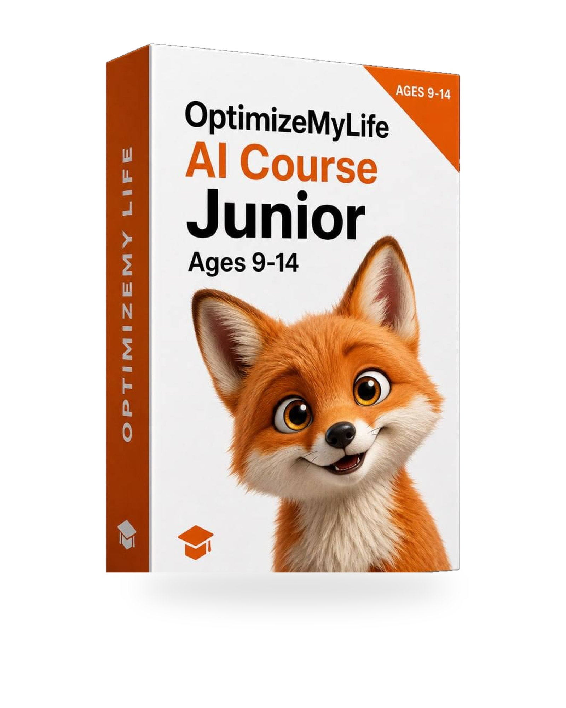
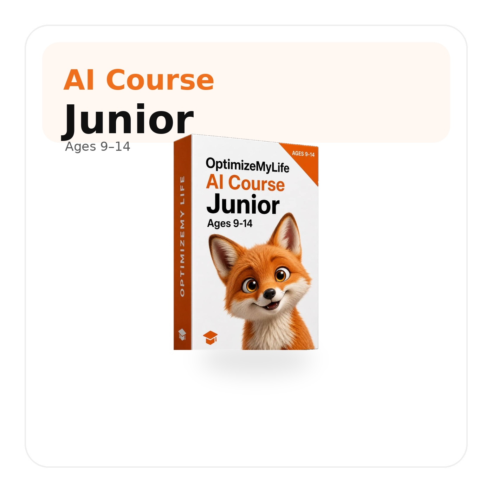
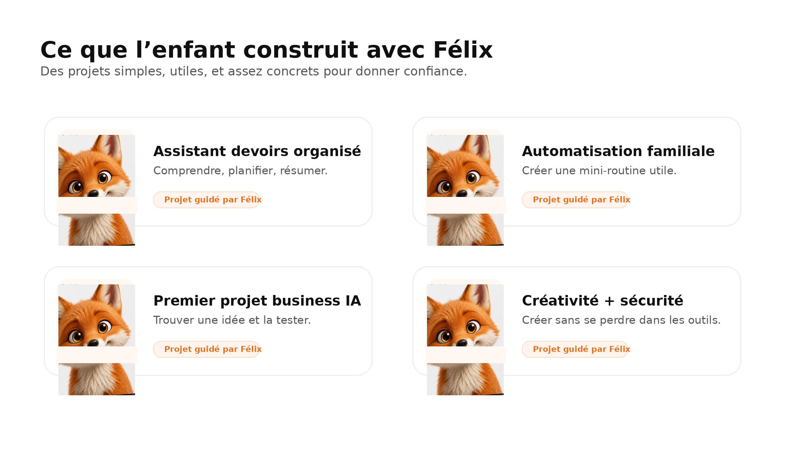
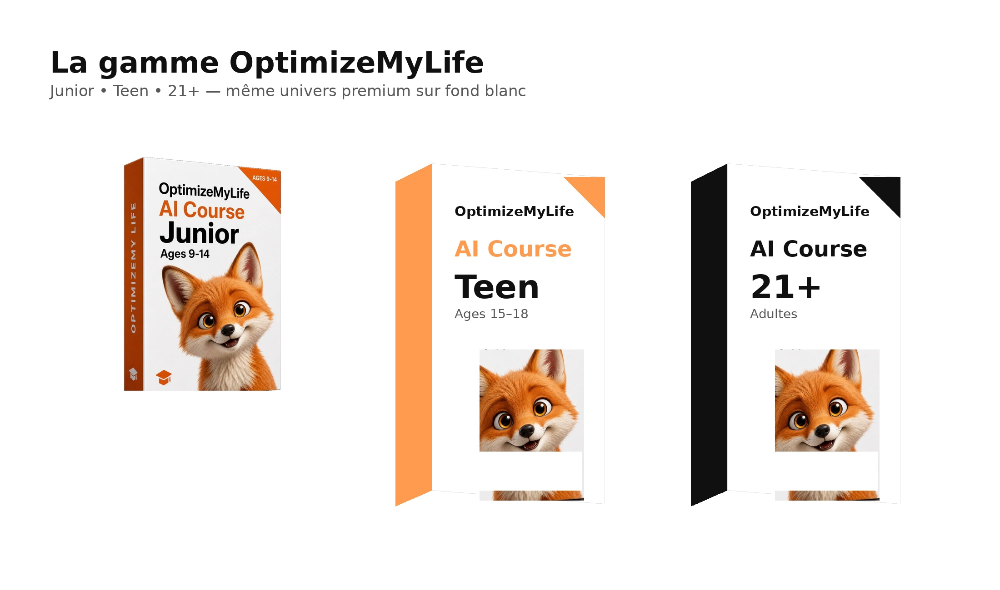
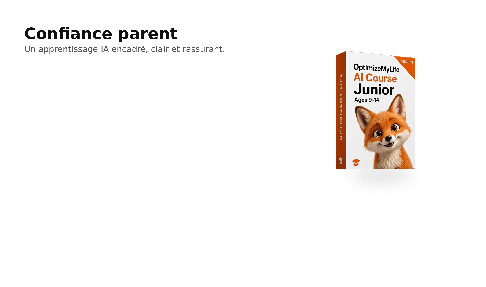
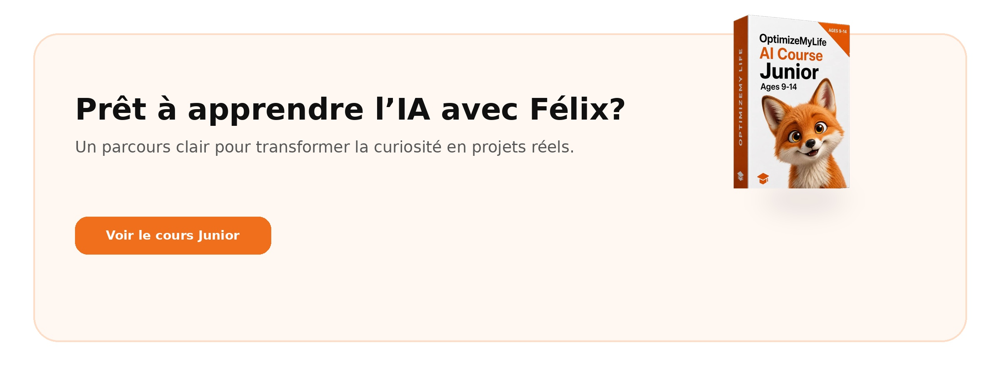

Choisir une vraie priorité (10 min)
Félix t'aide à enlever un obstacle concret.
OptimizeMyLife · système de vie guidé par l'IA
Félix accompagne les jeunes et les familles dans un parcours guidé : objectifs, focus, habitudes, projets et premier réflexe entrepreneurial — avec un repère clair pour les parents.
Aucun résultat garanti. Pas une thérapie. Pas un remplacement scolaire. Un parcours structuré pour apprendre à utiliser l'IA de façon pratique et responsable.

Félix t'aide à enlever un obstacle concret.
3 prochaines étapes prêtes.

Mentor IA, pas chatbot anonyme
Félix pose de meilleures questions, organise les idées, propose une petite action et invite à un check-in parent quand c'est utile. Pas de promesses magiques. Une présence chaleureuse, transparente et structurée.
« Petite vérité de renard : paniquer n'est pas une stratégie. Faire un plan, oui. » — Félix
Parcours guidés
Trois parcours, une même méthode : voir clair, choisir une priorité, agir 10 minutes, recommencer.

Pour les jeunes qui découvrent l'IA. Apprendre à voir clair, choisir, agir. 7 jours pour démarrer un système simple.

Pour les ados qui veulent passer du test au système : projets scolaires, créatifs et personnels, avec confiance et méthode.

Pour ceux qui veulent apprendre à créer de la valeur avec l'IA — éthique, encadré, adapté à l'âge. Pas une promesse de revenu.
Une vue partagée : ce que votre enfant apprend, ce qu'il prépare, les bons moments pour discuter — sans surveillance invasive.
Offre à confirmer avec Max — pas encore publiée.

Une vraie expérience produit
Cockpit du jour, parcours d'apprentissage, mentor Félix Live, Agent Lab, rapport parent. Tout est connecté.
Félix a préparé ta journée. 10 minutes suffisent.
Félix t'aide à enlever un obstacle concret de ta semaine.
3 / 7 jours · prochaine étape : Habit Loop.
Plan + 3 prochaines actions prêtes.
3 questions calmes, pas d'interrogatoire.
Félix t'accompagne étape par étape.
Aperçu visuel — la vraie connexion, la base de données et la sécurité production sont en attente d'approbation Max.

Confiance parents
Vous voyez ce que votre enfant prépare, sans transformer l'expérience en surveillance. Vous comprenez ce que Félix peut et ne peut pas faire. Vous gardez les conversations humaines pour vous.
Progrès, priorités de la semaine, notes de projet, suggestions de check-in.
Félix n'est ni thérapeute, ni enseignant, ni médecin. Pas de diagnostic, pas de promesse de note.
L'expérience est conçue pour la transparence parent, pas pour des conversations cachées.
Le moins possible. Aucune garantie absolue de confidentialité ne sera promise sans preuves techniques.
Rapport parent — aperçu
Progression, projet en cours, prochaine suggestion, signaux de sécurité. Disponible en clair et en sombre.
Sciences — plan posé, 2 étapes faites cette semaine.
Un check-in calme vendredi soir, 5 minutes. Félix a préparé 3 questions.
Aucun signal sensible cette semaine. Félix vous prévient si quelque chose mérite votre attention.
Sciences — plan posé, 2 étapes faites cette semaine.
Un check-in calme vendredi soir, 5 minutes. Félix a préparé 3 questions.
Aucun signal sensible cette semaine. Félix vous prévient si quelque chose mérite votre attention.
Agent Lab
Le jeune choisit un problème utile, Félix propose une trame, on découpe en étapes simples, on teste, on améliore. Pas de jargon, pas de magie, juste une méthode reproductible.
Connexion · Aperçu prototype
Un aperçu de l'app derrière la connexion. Choisissez votre rôle, essayez le mode démo, et explorez les écrans clés du parcours.
Prototype visuel — connexion réelle, mots de passe et sécurité production à venir.
Aperçu après connexion
Félix t'aide à enlever un obstacle concret.
Prochaine étape : Habit Loop
3 étapes prêtes
3 questions calmes
Voir clair sur école, projets, énergie.
Choisir une vraie priorité.
Construire une micro-habitude maintenable.
De l'idée aux 3 prochaines étapes.
Une phrase utile au bon moment.
Bonjour Léa. Tu veux qu'on regarde une priorité pour cette semaine ? Une chose à la fois, c'est plus simple.
Je me sens dépassée par mon projet de sciences.
D'accord. On rétrécit le problème. Quelle est la première chose que tu pourrais faire en 10 minutes pour que ça paraisse moins gros ?
Aperçu visuel — pas de chat IA réel branché à ce stade.
Une chose qui simplifie une journée.
Pour qui ? Pourquoi ? Comment savoir si ça marche ?
3 étapes concrètes, 30 minutes maximum.
Demander à un parent ou un ami.
Léa a choisi une priorité sciences et a posé un mini-plan. Bonne semaine pour encourager.
Check-in calme vendredi. 3 questions préparées par Félix.
Aperçu visuel — la gestion réelle des comptes n'est pas active.
FAQ & repères
Aux jeunes (préados et ados) et aux familles qui veulent un cadre clair pour apprendre l'IA. Une version adulte pourra reprendre la même méthode plus tard.
Non. Félix est éducatif et structuré. Il ne diagnostique pas, ne soigne pas, ne remplace pas un professionnel ou un parent.
La méthode vise l'inverse : utiliser l'IA comme outil pour mieux penser, choisir et agir. Pas pour décider à sa place.
Un rapport hebdomadaire avec progrès, projet, suggestions de conversation et signaux. Pas une surveillance temps réel.
Nous resterons prudents et transparents. Aucune garantie absolue ne sera promise sans preuves techniques. Les détails seront publiés avec l'app réelle.
Offre à confirmer avec Max — pas encore publiée. Aucun paiement n'est activé à ce stade.

Voyez la démo, découvrez Félix, et inscrivez-vous à l'aperçu privé pour suivre la sortie.
Pas de paiement à ce stade. Vous serez prévenu·e quand l'offre sera prête.